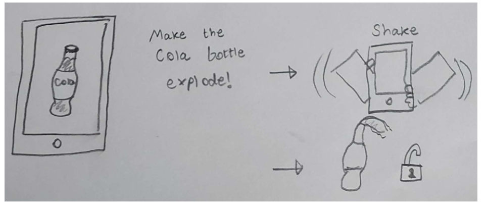

The objective of this project was to create two different interactive phone unlocking mechanisms: one touch-based, and one sensor-based. Our group decided to take inspiration from origami folding and orchestra conducting to create 2 unique applications. Our goal was to blend fun with security to create unlocking mechanisms personalized to the user.
Initial Sketches
First, we each created 20 sketches per person, 10 for a touch-based unlock and 10 for a sensor-based unlock. We came up with these ideas separate from each other without communicating, to achieve as wide a variety of unique ideas as possible.
Touch-Based Unlock Sketches
Origami Unlock (John)
Users create a personal origami folding pattern, and must recreate it to unlock.
Musical Pattern (Mahian)
Users must repeat a musical pattern using several instruments to unlock.
Draw Unlock (Bassel)
Users are prompted with a word to draw, and if the image is recognised, the phone unlocks.
Gradient Unlock (John)
Users create a custom colour palette and must recreate it to unlock.
Joy Stick (Mahian)
Users have 15 seconds to collect check marks by moving between lanes. If the time elapses without them accidentally collecting any crosses, the phone unlocks.
Signature Unlock (Bassel)
Users must register their signature and recreate it to unlock their phone.
Lego Style (John)
Users create a personal shape formation by rotating and placing blocks and must recreate it to unlock.
Geo Guesser (Mahian)
Users will be given a Google street view of a random place on earth, and must pinpoint their location to unlock.
Personal Jingle (Bassel)
Users create their own personal jingle using several instruments, and must recreate it to unlock
Emoji Unlock (John)
Users create an emoji-based password by rotating and placing emojis and must recreate it to unlock.
Sensory-based unlock sketches
Orchestra (Mahian)
Users must "conduct" along to a song - entering the correct directional inputs while keeping in time with the music to unlock.
Personal Items (John)
Users would use the camera to scan a registered personal belonging, such as house keys or civil ID to unlock.
Ball Drop (Mahian)
Users tilt their device to create slope so that the ball can accelerate into the hole, unlocking the phone.
Emoji Scanning (Mahian)
Users would need to imitate the emoji being presented to unlock.
Facial Movement (John)
User would input their personalised sequence of facial movements, such as eyebrow movements or sticking out their tongue, to unlock.
Peg and Ring (Bassel)
Users would launch a ring in the air by jolting the phone upwards, then attempt to land the ring on the peg to unlock.
Astrological Scanning (Mahian)
Users would be prompted with a constellation visible from their geographical location, which they would need to scan to unlock.
Palm Tracing (John)
The unique palm lines and vein positions of a user would be scanned to unlock.
Shake Unlock (Bassel)
Users would shake the phone to unlock.
Sign Language (Bassel)
A unique sign language or gesture based password must be scanned by the camera to unlock.
Refined Sketches
Next, we created 20 more sketches per person, 10 touch-based and 10 sensor-based. These sketches were refinements of our previous sketches. We each created alternative versions of the sketches that spoke to us most, expanding on the ideas. The ideas that provoked the most ideation were the origami unlock and the use of the gyroscope.
Touch-based Unlock Refinements
Origami Unfold (John)
Refinement of "Origami Unlock" sketch - rather than folding a piece of paper in a particular order, users unfold it in a particular order.
Gradient Swapping (Bassel)
Refinement of "Gradient Unlock" sketch - rather than recreating a specific gradient, users rearrange tiles to form a gradient.
Fortune Teller Unlock (John)
Refinement of "Signature Unlock" sketch - users have to locate their signature on a fortune teller.
Constellation Connect (Bassel)
Refinement of "Astrological Scanning" sketch - rather than scanning constellations using the camera, users instead need to connect the stars in the correct configuration.
Jumbled Constellation (John)
Refinement of "Astrological Scanning" sketch - users must reassemble a chosen constellation by moving and rotating pieces to unlock.
Diamond Puzzle (Bassel)
Refinement of "Lego Style" sketch - users must solve a simple uniquely shaped puzzle to unlock.
Origami Code (John)
Refinement of "Origami Unlock" sketch - users must fold pieces of paper into digits which form a password to unlock.
Emoji Guesser (Bassel)
Refinement of "Emoji Unlock" sketch - users will be given a series of emojis which represent a famous film, and must guess the film to unlock.
Origami Puzzle (John)
Refinement of "Origami Unlock" sketch - users must unfold pieces of paper and organise them into a predetermined shape to unlock.
Match Song (Mahian)
Refinement of "Musical Pattern" sketch - a song will play, and users must select the name of the song correctly to unlock.
Sensory-based Unlock Refinements
RFID Unlock (Bassel)
Refinement of "Personal Items" sketch - users unlock using the RFID tag in a piece of registered ID.
Spatial Drawing (John)
Refinement of "Draw Unlock" sketch - using the gyroscope to detect fine movements to allow users to draw in the air, rather than on their screen.
Sing the Song (Mahian)
Refinement of "Musical Pattern" sketch - users must sing the correct song in order to unlock.
Follow the Direction (John)
Refinement of "Orchestra" sketch - users will be prompted with a sequence of directions which they must mimic to unlock.
3D Ball Maze (Bassel)
Refinement of "Ball Drop" sketch - using the gyroscope to get a ball through a 3d maze so it can enter the hole to unlock.
Hand Gesture + Palm Scan (John)
Refinement of "Palm Tracing" sketch - users must perform a specific gesture in addition to having their hand scanned.

Exploding Cola (Bassel)
Refinement of "Shake Unlock" sketch - gamification of original sketch, users must shake a cola bottle until it explodes to unlock.
Humming Orchestra (John)
Refinement of "Orchestra" sketch - similar to original sketch, but users must also hum along to the music to unlock.
Ball Maze (Mahian)
Refinement of "Ball Drop" sketch - users must tilt their device to navigate to the end of a 2d maze to unlock.
Balance Frame (Mahian)
Refinement of "Lego Style" sketch - users must place the objects in the correct formation while also making sure to keep the phone steady and balanced.
Final Design and Contributions
Origami Unlock
For our final touch-based design, we decided to implement my origami unlock. We felt it was the best idea, as it was a combination of all the other ideas we explored - puzzles, pattern matching and drawing (or in this case, folding). Although we created many variations of the idea in our refined sketches, we felt the original idea was the best, as it was visually appealing and also highly personalizeable, as there are theoretically an infinite number of folding patterns to be made. This personalization also lends some aspect of security, as only the user would know their specific fold. The implementation of this idea was created in Glitch by myself, and the video walkthrough and writeup were done by Bassel.
Orchestra Unlock
For the sensor-based unlock mechanism, we ended up choosing Mahian's orchestra unlock. Many of our initial and refined sketches focused heavily on the use of the gyroscope, and we felt this was the most unique and fun idea that utilized it. For the final implementation, we decided to use my "Follow the Direction" sketch as a framework. Rather than dynamic conducting being required for the unlock, users would instead input a predetermined sequence in time to the music. We felt it was best to keep the unlocking mechanism simple, as theoretically it would be used by a large user base. The implementation was done in Glitch by Mahian, and the video walkthrough and writeup were done by Bassel.